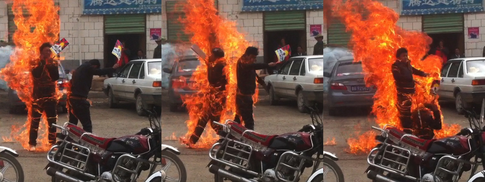
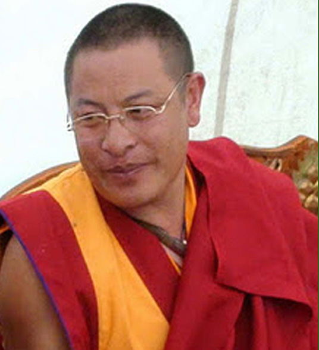
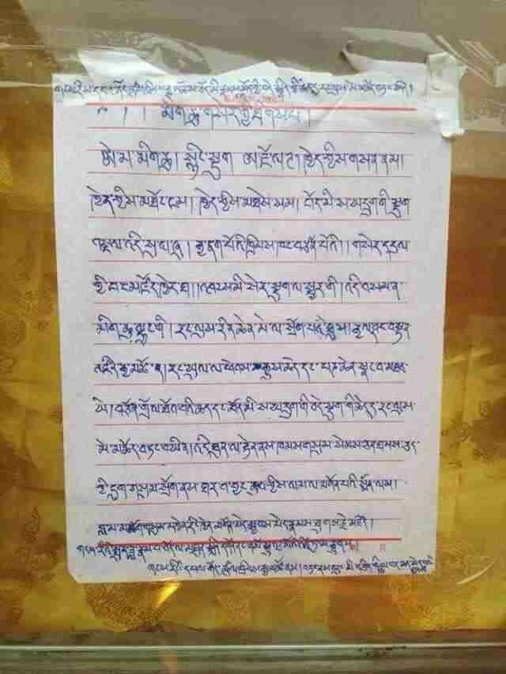
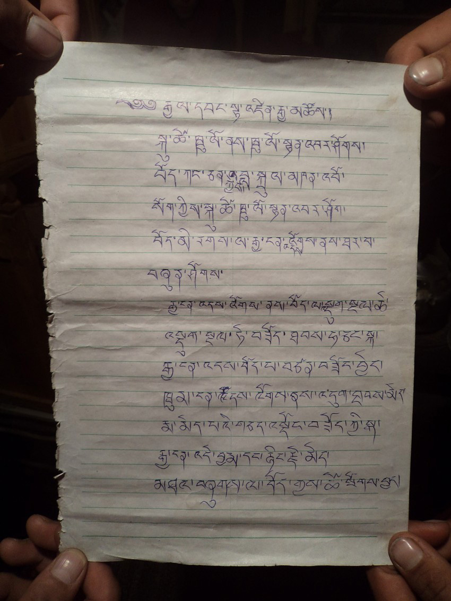
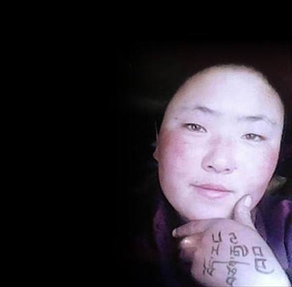
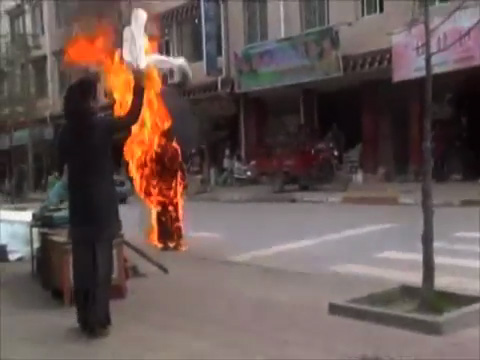
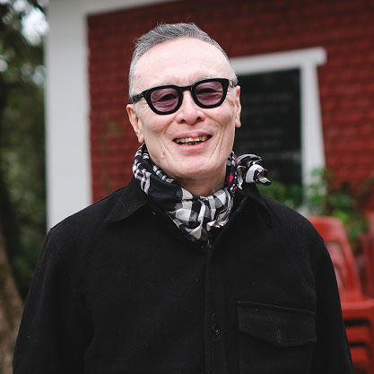

Tibetan Art
Tenzing Sonam

Ngawang Norphel, 24, and Tenzin Khedup, 22, self-immolated on 20 June 2012, in the town of Zatoe, Qinghai Province

Lama Soepa, 40s, self-immolated 8 January 2012, in the town of Darlag, Qinghai Province

The last testament of Tsultrim Gyatso, 43, self-immolated on 19 December 2013, in the town of Achok, Gansu Province

The last testament of Nangdrol, 18, self-immolated on 19 February 2012, in Dzamthang County, Sichuan Province

Sangye Dolma, a 17-year-old nun, self-immolated on 25 November 2012 in Barkhor Village, Gansu Province. She also left behind a note and a memory card in an envelope. In the note she wrote in Tibetan: "There is a photo of mine in the memory card. Here is the will for the photo. Sons and daughters of Tibet, the darlings of Snow lion, the brave sons of Tibet, remember you are Tibetan. My name is Sangye Dolma. Sixteen years old by the Solar calendar, seventeen years old by the Tibetan Calendar." In the photo, the words "Tibet, an independent country" is written on her hand.

Ani Palden Choetso, 35, self-immolated on 3 November 2011, in Tawu County, Sichuan Province
I Will Burn Myself Again and Again
Notes on the Self-immolations in Tibet
by Tenzing Sonam
On 27 February 2009, a young monk named Tapey stepped onto a street in the town of Ngaba in Eastern Tibet and set himself on fire. Video footage of the event, subsequently smuggled out of the country, shows a burgundy-robed monk, arms spread wide, walking in a swaying motion, flames licking his upper body. He is holding a photo of the Dalai Lama in one hand and the Tibetan national flag in the other, both banned symbols of resistance. Policemen run after him and smother him in a cloud of fire extinguisher spray. He runs in a cloud of smoke and the video stops abruptly. Eyewitness accounts state that Tapey was then shot several times by the policemen before being taken away. His fate remained unknown for years but it later transpired that he had survived.
Tapey's was not the first self-immolation attempt by a Tibetan – Thupten Ngodup, a Tibetan exile, had set himself on fire at a political protest in New Delhi on 27 April 1998 and succumbed to his injuries – but his was the first inside Tibet and marked a landmark moment in Tibet's six-decade struggle for freedom from Chinese rule. Two years after Tapey's action, on 16 March 2011, another monk, 20-year-old Lobsang Phuntsok, set himself alight in public and died on the spot. His death ignited a chain of self-immolations that raged like wildfire across the Tibetan plateau. To date, an estimated 157 Tibetans have burnt themselves inside Tibet, of which 136 have died. A further eight Tibetans have self-immolated in exile. Led initially by monks and nuns, they were soon joined by ordinary people – farmers, nomads, teachers, students – and were united by a common demand: the return of the Dalai Lama to his homeland, and freedom for Tibet, that they either shouted out as they were burning, or wrote or recorded in their last testaments.
This unprecedented form of protest was initially captured on citizen videos and smuggled to members of the exile Tibetan community who then made them public on social media. The videos graphically brought home the full horror of a living human body being consumed by flames: the blurred outline of a figure engulfed in flames, the slow-motion collapse followed by the agonising contortion of twitching limbs that can only hint at the unimaginable pain being endured, and then the charred remains in grisly rigor mortis, all pretence of humanity stripped bare. Why would anyone do this? And was any cause worth the sacrifice of a life being offered in this most excruciatingly painful of ways?
To understand why Tibetans were pushed into resorting to such a self-brutalising form of protest, we have to return to the root causes of the Tibet issue. In 1913, the 13th Dalai Lama declared Tibet to be an independent country. Whatever the historical interpretation of Tibet's status prior to this proclamation – and Tibetan and Chinese historians are sharply divided on the issue – the fact remains that from this moment on, until its invasion and occupation in 1950, Tibet fulfilled most definitions of a modern nation state. It had a fully functioning government, a civil service, judicial and taxation systems, and its own army, postal service and currency. It even issued its own passport, which was recognized by major Western countries. Additionally, it had its own language, a long cultural and literary tradition, a unique way of life that had evolved in harmony with its high-altitude environment, and importantly, a civilization built around Tibetan Buddhism that had spread far beyond its borders.
China's violation of this sovereignty and its subsequent colonisation of the country set into motion a concatenation of events that led directly to the wave of self-immolations. Since its takeover, China has consistently and systematically marginalised Tibetans and reduced them to second-class citizens in their own country. Waves of Han migrants from the mainland have transformed Tibetan cities and towns into replicas of Chinese urban centres and altered their demographic makeup.
The practice of Tibetan Buddhism, the lifeblood of Tibet's culture, was singled out as a threat to Chinese rule and subjected to strict controls and regulations. Stringent rules discourage Tibetans from joining monasteries and nunneries, which are kept under tight surveillance. Monks and nuns are regularly subjected to patriotic education campaigns, which include the denunciation of the Dalai Lama, who most Tibetans consider to be their spiritual and temporal leader, and the embodiment of the Buddha of Compassion. This is one of the most humiliating and deeply hurtful acts that Tibetans are subject to. The mere possession of the Dalai Lama's photographs in Tibet is an imprisonable offence. More recently, China passed a law that authorises the Chinese government to approve the confirmation of all reincarnations of senior Buddhist lamas, including the Dalai Lama. This means that when the current Dalai Lama passes away, China will select its own Dalai Lama to replace him, a move that is guaranteed to further alienate the Tibetan people who will never accept a Chinese-approved Dalai Lama.
The study of Tibetan language has been deliberately discouraged with schools teaching in Tibetan gradually phased out. An estimated one million Tibetan children between the ages of four and 18 are now forced to attend boarding schools where the primary language of instruction is Mandarin. Tibet's substantial nomadic population, the custodians of its high grasslands for millennia, has been forced to give up herding and resettle in concrete housing blocks; the justification for this, ironically, is to protect the environment. Meanwhile, Tibet's resources are being rampantly exploited and shipped back to the mainland.
At the same time, Tibet has become a repressive police state with a huge security apparatus that includes state-of-the-art electronic surveillance technology and an insidious network of informers and spies. Tibetans are subject to oppressive policies that are not enforced in other parts of China, including the requirement of special documents to travel within Tibet, a restriction that does not apply to Chinese citizens.
The pent-up discontent of the Tibetan people exploded briefly in March 2008, when large-scale demonstrations broke out in Lhasa and spread across the Tibetan plateau. This was the largest uprising against Chinese rule since 1959 and it came as a surprise to the Chinese authorities who were not prepared for the scale of resentment against their rule. Once the uprising was quelled, Tibet was made out of bounds to the international media, and only limited groups of tightly controlled foreign tourists were permitted to visit, a state of affairs that remains to this day. In the shadow of the media blackout, thousands of Tibetans were arrested, including poets, writers and musicians, for their part in the protests. New laws were put into place, further restricting even the limited rights and freedoms that had previously been granted, and contributing to the sense that the very soul of Tibet's identity was being irrevocably erased. It was in this climate of draconian repression, retaliation and heightened fear, that the wave of self-immolations began.
The spate of self-immolations and their explicit visual representation shocked exile Tibetans like me into reappraising the political situation in Tibet. Numbed by a lifetime of estrangement from our homeland, they dramatically alerted us to the sheer magnitude of the problems our fellow countrymen were facing. Was the act of self-immolation an act of desperation born out of despair and hopelessness? Or was it an act of bravery and heroism, a refusal to surrender to one's fate, an inspirational call to action to fellow Tibetans not to give up the struggle? On this matter, the Tibetan poet and dissident writer Woeser, a trenchant critic of the Chinese regime who lives in Beijing, is very clear:
In my interviews with international media on the topic of self-immolation, I have always tried to emphasize one area of frequent misunderstanding: self-immolation is not suicide, and it is not a gesture of despair. Rather, self-immolation is sacrifice for a greater cause, and an attempt to press for change...Such an act is not to be judged by the precepts of Buddhism: it can only be judged by its political results. Each and every one of these roaring flames on the Tibetan plateau has been ignited by ethnic oppression. Each is a torch casting light on a land trapped in darkness. These flames are a continuation of the protests of 2008 and a continuation of the monks' decision that March: "We must stand up!"
As hinted at in Woeser's statement, the self-immolations sparked soul-searching and impassioned debate even within the Tibetan community about their legitimacy and ethical correctness as a non-violent weapon of protest. Was the act of burning oneself to death, even if undertaken in the interests of a larger cause, acceptable in the context of the Buddha's teachings? Was it not a form of violence against oneself and therefore counter to the fundamental tenets of Buddhism?
This was not a new dilemma. When the Vietnamese monk Thich Quang Duc set himself alight on a Saigon street on 11 June 1963 – the first documented political self-immolation in modern times – the photograph of the incident quickly became an iconic and enduring image of struggle and resistance. But the graphic representation of a serene Buddhist monk sitting cross-legged in a blaze of fire also raised many ethical questions. Martin Luther King Jr. was one who expressed his disquietude. In response, the Vietnamese monk and Buddhist teacher, Thich Nhat Hanh, wrote him a much-publicised letter. He explained:
The Vietnamese monk, by burning himself, say with all his strengh [sic] and determination that he can endure the greatest of sufferings to protect his people. But why does he have to burn himself to death? The difference between burning oneself and burning oneself to death is only a difference in degree, not in nature. A man who burns himself too much must die. The importance is not to take one's life, but to burn. What he really aims at is the expression of his will and determination, not death. In the Buddhist belief, life is not confined to a period of 60 or 80 or 100 years: life is eternal. Life is not confined to this body: life is universal. To express will by burning oneself, therefore, is not to commit an act of destruction but to perform an act of construction, i.e., to suffer and to die for the sake of one's people.
In this context, it makes sense that the first self-immolators in Tibet were all monks. One of the most basic Buddhist concepts they practice on a daily basis is the cultivation of compassion and altruism. This notion of self-sacrifice for the benefit of others is ingrained in Buddhist teachings, and monks and nuns, more than most people, are intimately acquainted with the concept. For at least some of the self-immolators, their decision to burn themselves would have been informed by this knowledge. There is another aspect to the Tibetan self-immolations that ties it in with the idea of self-sacrifice in the interests of a larger cause, and that is in the nature of the action itself. Lighting a lamp and burning incense are among the most common forms of making a religious offering in Tibet. This unity of fire and light as a symbolic offering of prayer and hope cannot be overlooked as yet another motivation for the self-immolators. Indeed, both the aspect of sacrifice for a larger cause and the symbolic nature of fire and light as an offering become clear when we examine the last messages that some of the self-immolators left behind.
Lama Soepa, a high-ranking Buddhist monk, who self-immolated on 8 January 2012, recorded an audio message in which he said:
This is the twenty-first century, and this is the year in which so many Tibetan heroes have died. I am sacrificing my body both to stand in solidarity with them in flesh and blood, and to seek repentance through this highest tantric honour of offering one's body. This is not to seek personal fame or glory. I am giving away my body as an offering of light to chase away the darkness, to free all beings from suffering, and to lead them – each of whom has been our mother in the past and yet by ignorance has been led to commit immoral acts – to the Amitabha, the Buddha of infinite light.
Similarly, Tsultrim Gyatso, who burnt himself on 19 December 2013, wrote in his final testament:
I set myself on fire for the return of His Holiness the Dalai Lama to Tibet, to free Panchen Rinpoche from prison, and for the welfare of six million Tibetans. May all sentient beings residing in the three realms be free from the three poisons and attain Buddhahood.
18-year-old Nangdrol, who set himself alight on 19 February 2012, wrote:
Raise your head high with courage and loyalty. I, Nangdrol, call with gratitude upon my parents, siblings and relatives. The time has come for me to leave for the sake of the Tibetan people, by setting my life on fire. My requests to the Tibetans are: Be united, be Tibetan, dress Tibetan and speak Tibetan. Never forget that you are a Tibetan. Be compassionate. Respect your parents. Most of all, be united. Treat animals with compassion, do not slaughter them.
Most of the letters left behind by the self-immolators stress this conviction that their action is for the larger benefit of their people and country. As Thich Nhat Hanh emphasises, the act of self-immolation is not an act of destruction, but one of construction, in that it sends out a message of defiance and solidarity in the face of overwhelming despair.
At a time when all avenues to protest were shut down and despondency could easily lead to loss of hope, or worse, to a resigned acceptance of the situation as fait accompli, the self-immolators were taking the radical final step of burning themselves publicly to continue sending a message of defiance and inspiration. The message that the self-immolators sought to transmit was directed primarily at their fellow Tibetans. In their final testaments, they constantly remind Tibetans not to forget their language and traditions, and exhort them to remain united and not fight among themselves.
Since its peak in 2012, when there were 80 self-immolations, the number has steadily declined. After initially downplaying the self-immolators as mentally disturbed individuals, Chinese authorities then shifted the blame to the Dalai Lama-led exile Tibetan community and accused them of inciting unsuspecting Tibetans to commit violent acts of self-destruction. When the scale and the spread of the self-immolations became too huge to explain away with these easy accusations, the state shifted its tactics. First, the flow of information about the self-immolations – particularly the graphic images and videos – was stopped by imposing harsh penalties on those caught transmitting the material, and by exercising more rigid controls on mobile phone and internet usage. Second, security personnel were armed with fire extinguishers while patrolling city streets in order to prevent death in the event of a self-immolation. Later, self-immolators sought to subvert this by drinking gasoline to ensure that they would burn from within. When the authorities could not control the extent of self-immolations, they resorted to punishing those closest to the self-immolators – their immediate family and community – by imposing harsh penalties, including imprisonment and torture, on charges of aiding and abetting. This proved effective. Those wishing to burn themselves in a political act of defiance no longer had control even over their own bodies. Killing oneself was to subject your loved ones to the consequences of the action.
The last recorded self-immolation in Tibet that we are aware of took place on the 27 March 2022. As of this writing, Tibet is more tightly controlled than at any other time since its occupation. A series of policies aimed at rewriting and reimagining Tibetan culture and history to fully absorb them into the dominant Han Chinese narrative is accelerating the disappearance of Tibet's unique identity. How will Tibetans respond? One can only hope that they will continue to find new ways of fighting back, of continually reinventing their struggle, because the alternative – the extinction of an entire people and a culture – is all too real.
I will end with a poem by the exile Tibetan poet Sungchuk Kyi, who wrote it during the height of the self-immolations in Tibet.
I Will Burn Myself Again and Again
I wish to burn, thus, without regret.
This magnificent light, like a butter lamp, is ignited by my mind.
This whole body, like an offering bowl, desires to be sacrificed without remorse.
Brothers and sisters, old and young, who will live forever in my heart,
Gods and Goddess illuminated by the conviction of my love and faith,
And the splendour of the immovable mountains and enduring rivers in my heart,
As I leave, all of you rise higher within my consciousness.
As I leave, all of you live longer through my aspirations.
From now on, aim the bullets of a hundred thousand guns only at me.
Inflict the most painful beatings and tortures only on me.
Direct all your persecution and tyranny only on me.
I offer you my precious life in return.
I assume full responsibility for this commitment.
From today, please treasure the traditions and heritage of my lineage.
Take care of the purity of my land and environment.
Respect the life force of my mother tongue.
Give freedom to all my beloved brothers and sisters.
This is my last testament, written in blood.
These are the reasons and aspirations why I burn myself again and again.
These must be fulfilled!
All the power of the gods dwelling amidst love and faith,
All the feelings of human beings living in the world,
Show your solidarity with my past.
Be witness to my present, before my eyes.
Show concern tomorrow for the welfare of my family.
I am walking thus on the path of light, to become the living proof of truth.
I am burning myself thus on the sad face of my reality.
All my brothers and sisters, young and old, living in misery and sorrow,
All people throughout the world who love freedom and peace,
And to you, tyrants of violence, oppression and torture,
What I want is a life of equality and fairness.
What I am searching for is an existence of equality and caring.
Until I accomplish this,
I will burn myself again and again.
(Translated by Om Gangthik)
CONTENTS

ABOUT THE ARTIST
Tenzing Sonam was born in Darjeeling, India, to Tibetan refugee parents. He is a filmmaker,
writer and artist, currently based in Dharamshala, India. A recurring subject in his work
is Tibet, forming an intimate engagement at different levels: personally, politically and
artistically. Through his films and artistic and archival work, he has attempted to document,
question and reflect on the issues of exile, identity, culture and nationalism that confront
the Tibetan people.
His work includes award-winning documentaries, two narrative features and a number of
video installations. He is co-founder and co-director of the Dharamshala International Film
Festival, one of India's leading independent film festivals.